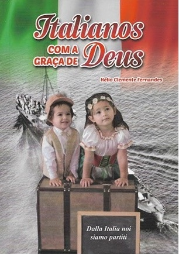

| "O livro é de fundamental importância para o desenvolvimento das sociedades e para o crescimento intelectual dos seres humanos. É ele que permite ao ser humano registrar fatos importantes da sua história e repassar tais fatos às sociedades posteriores, atuando como vetor do conhecimento" |
| "Os escritores visam valorizar, dentre outras coisas, a história do trabalho, suor, dedicação e sofrimento daqueles que um dia foram o alicerce da família. É por causa deles que estamos aqui." |  |
"Todos os que buscam um sentido e uma razão para viver, ao seu modo, vão identificar-se com esses versos. A vida passa rápido demais, ela escorre pelas mãos. Que esses poemas possam ajudar na reflexão daquilo que mais importa no nossos peregrinar terrestre" |
| "A greve foi pedagógica. Trabalhadores unidos fazem um governante tremer. Não há juiz. Poder legislativo. Manipulação midiática capaz de segurar aqueeles que lutam em defesa de seus direitos." |
"Famílias que se amam são felizes. O amor é o alicerce da família, é a base da humildade, da virtude, da esperança e da paz." |